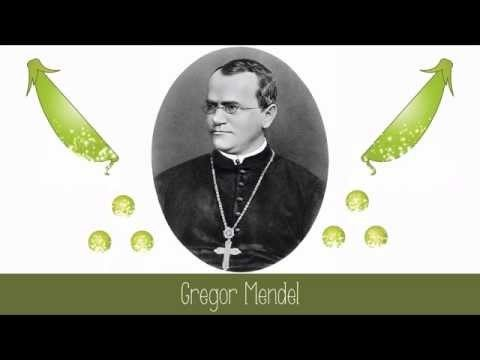
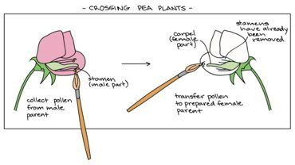
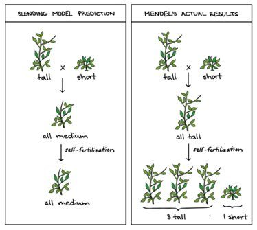
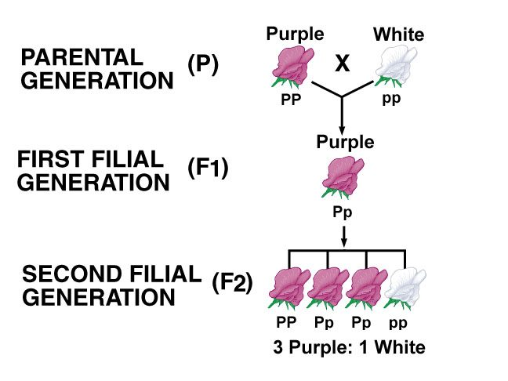
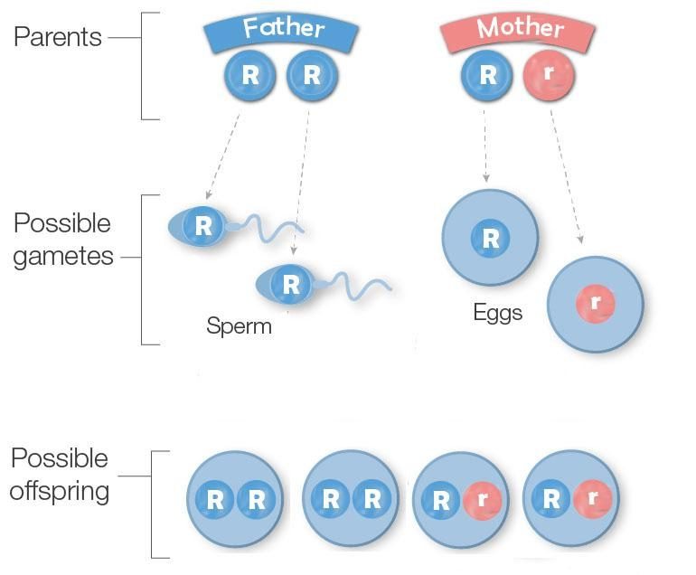
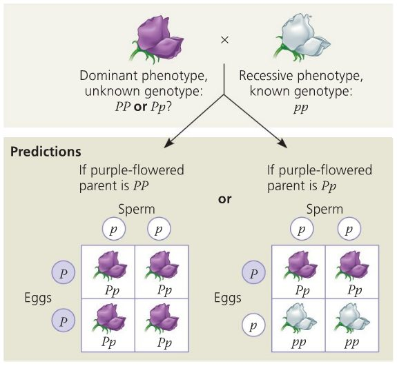
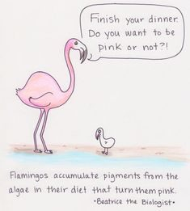
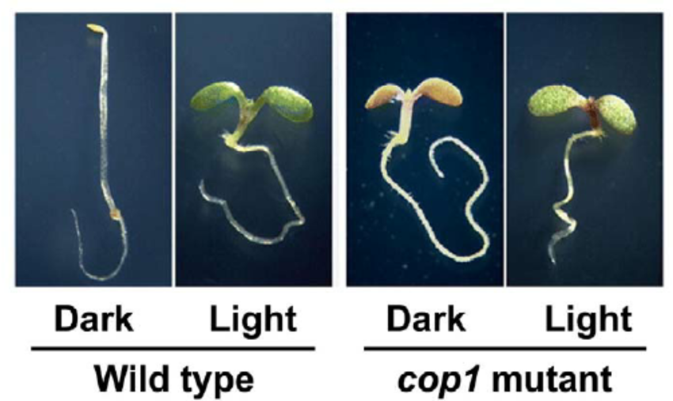

Mendel and inheritance
Before Mendel, people believed traits from each parent blended together. In 1866, Gregor Mendel proposed a different theory of inheritance.
- Born in 1822, he became a monk in 1843, taught biology and was interested in statistics.
- Between 1856 and 1863 he grew and tested over 28 000 pea plants.
- He chose peas because they are easy to grow, have easily identified traits, and can be grown in large numbers.
- He carefully pollinated each flower with pollen from a chosen plant, so he could perform specific crosses without random insect pollination.


Mendel's experiments
- First he created true-breeding (pure-breeding) plants: plants that only ever produce offspring with the same trait. A plant true-breeding for purple flowers always produces purple-flowered offspring.
- He crossed true-breeding plants with contrasting traits (purple × white flowers, wrinkled × smooth seeds, tall × short plants…).
- All the offspring (the F1 hybrids) showed just one of the traits: e.g. all purple flowers. In every case, one trait "won out".
- When he let the F1 plants self-pollinate, the hidden trait reappeared in about ¼ of the F2 offspring: a 3 : 1 ratio.


From his experiments, Mendel concluded:
- Inheritance is determined by factors passed from one generation to the next. Today these factors are called genes, and their different forms are alleles.
- Some alleles are dominant and others are recessive. An organism with a dominant allele always shows that trait; a recessive trait only shows when no dominant allele is present.
Genotype and phenotype
- Genotype: the specific combination of alleles an organism carries (e.g. RR, Rr or rr).
- Phenotype: the physical expression of those alleles: what you observe (e.g. a red-flowered plant).
Dominant and recessive
- A dominant allele is written with a capital letter (e.g. T for tall). If it is present, it is expressed in the phenotype.
- A recessive allele is written in lower case (e.g. t for short). The recessive phenotype only appears in homozygous recessive individuals (tt).
Following alleles from parent to offspring
Each parent has two alleles, but each gamete contains only one. For example, if the father is RR (gametes R and R) and the mother is Rr (gametes R and r), the four possible combinations are RR, RR, Rr and Rr.

A cross involving one trait is a monohybrid cross. The first generation of offspring is F1 (first filial) and the second is F2.
Punnett squares
A Punnett square (named after Reginald Punnett) shows the probability of each genotype in the offspring of a cross. One parent's gametes go across the top, the other's down the side, and each box combines them.
Activity: Punnett squares
R = red (dominant), r = white (recessive).
Use a Punnett square for each cross. What percentage of the offspring have white flowers?
| Cross | % white flowers |
|---|---|
| RR × Rr | % |
| RR × rr | % |
| Rr × Rr | % |
| Rr × rr | % |
P = purple (dominant), p = white.
- In a cross between PP × Pp, the percentage of purple offspring is %.
- In a cross between Pp × Pp, the percentage of white offspring is %.
Complete the ratios for each cross. W = long, w = short; C = smooth, c = rough.
- Ww × ww: genotypes ; phenotypes
- CC × cc: genotypes ; phenotypes
- Cc × Cc: genotypes ; phenotypes
Test crosses
How can you tell whether an organism with the dominant phenotype is homozygous dominant (PP) or heterozygous (Pp)? Cross it with a homozygous recessive (pp) organism:
- If no offspring show the recessive phenotype, the unknown is probably homozygous dominant (PP).
- If any offspring show the recessive phenotype, the unknown must be heterozygous (Pp), because each parent must have given a recessive allele.

What genotype of pea plant could you cross with a red-flowered plant (RR or Rr) to find out its genotype?
A homozygous recessive plant only gives r alleles, so any white offspring prove the red parent carries an r.
Environment and phenotype
The genotype mostly determines the phenotype, but some traits are also influenced by the environment.
- Flamingos don't grow pink feathers: chemicals in their food (algae and shrimp) turn their feathers pink.
- Identical seeds grow differently in the dark compared with the light.

